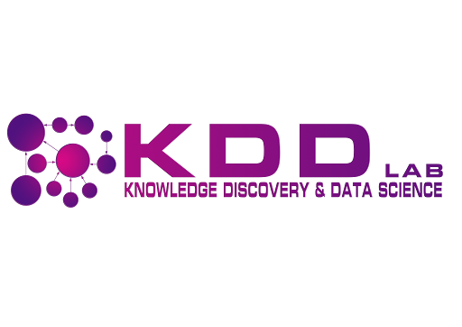
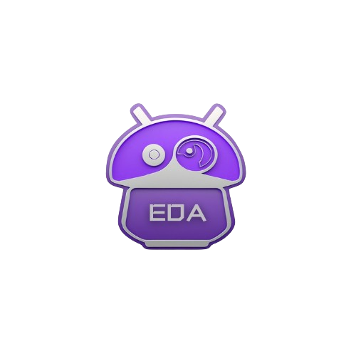
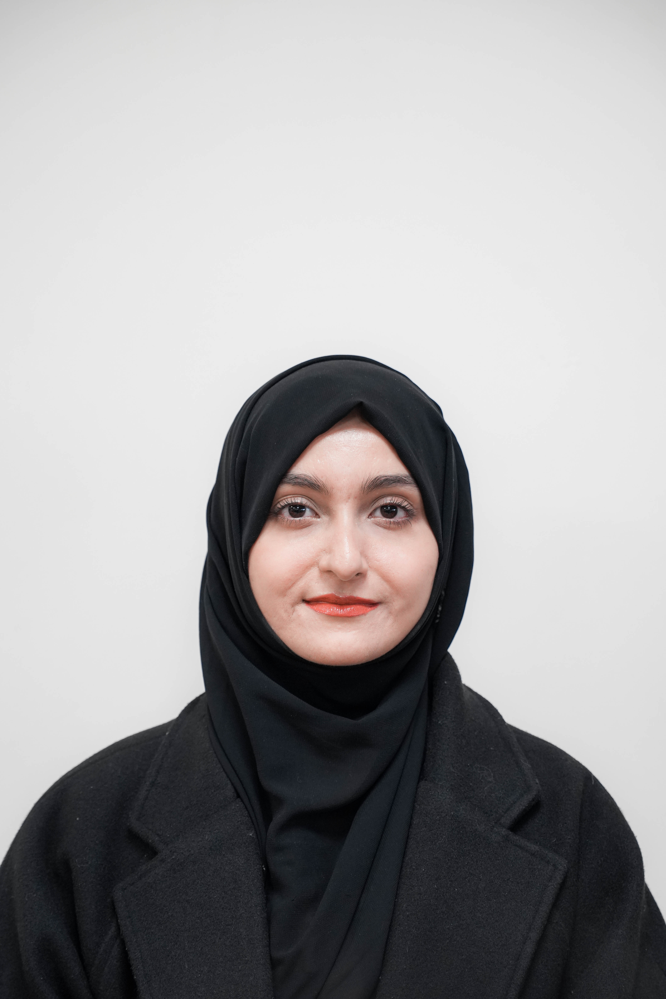
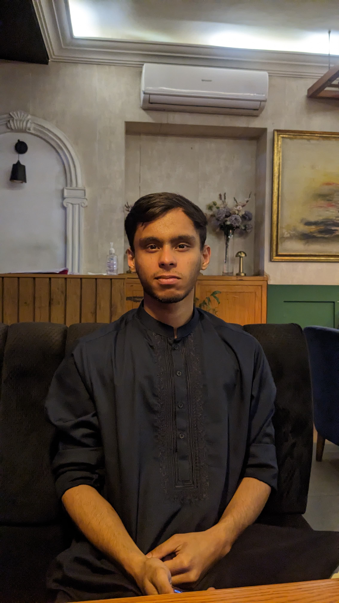
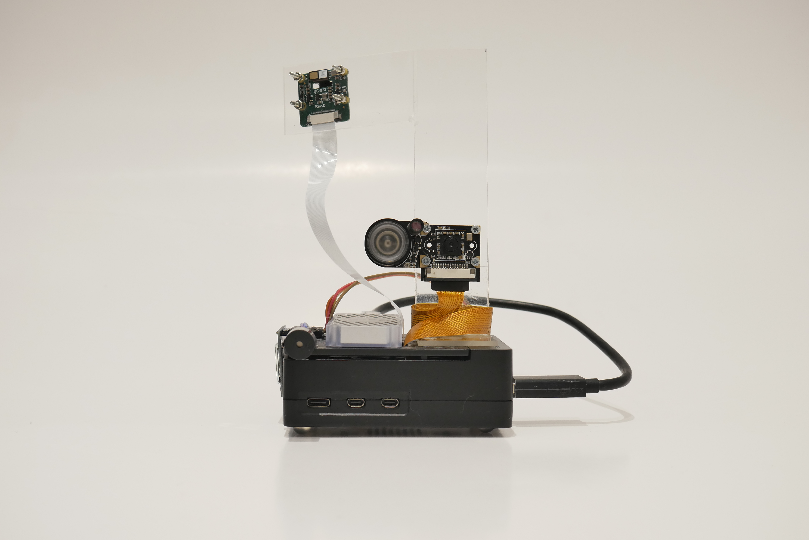
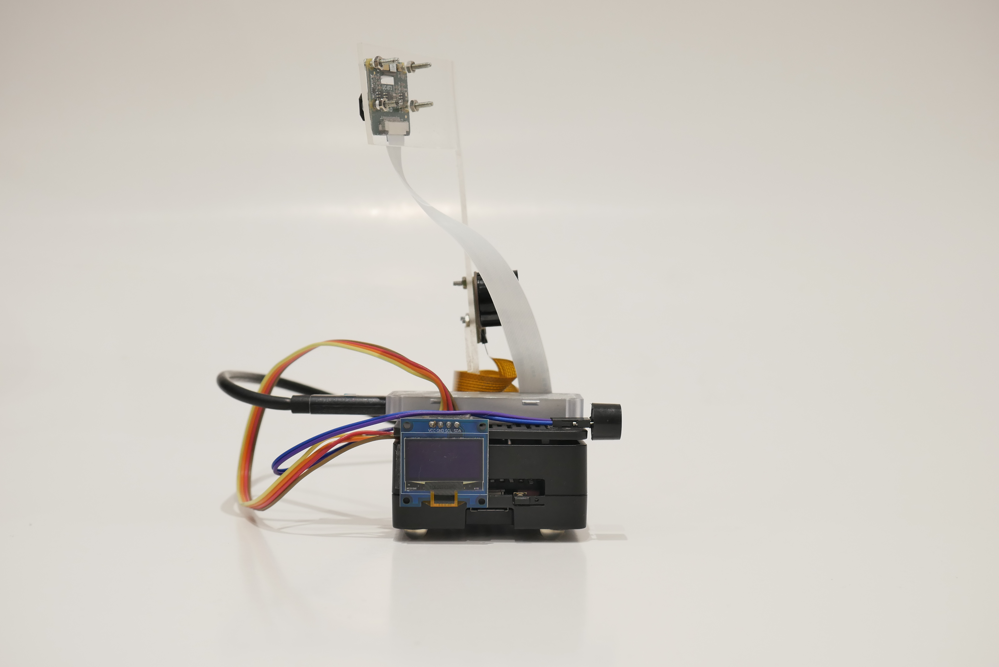
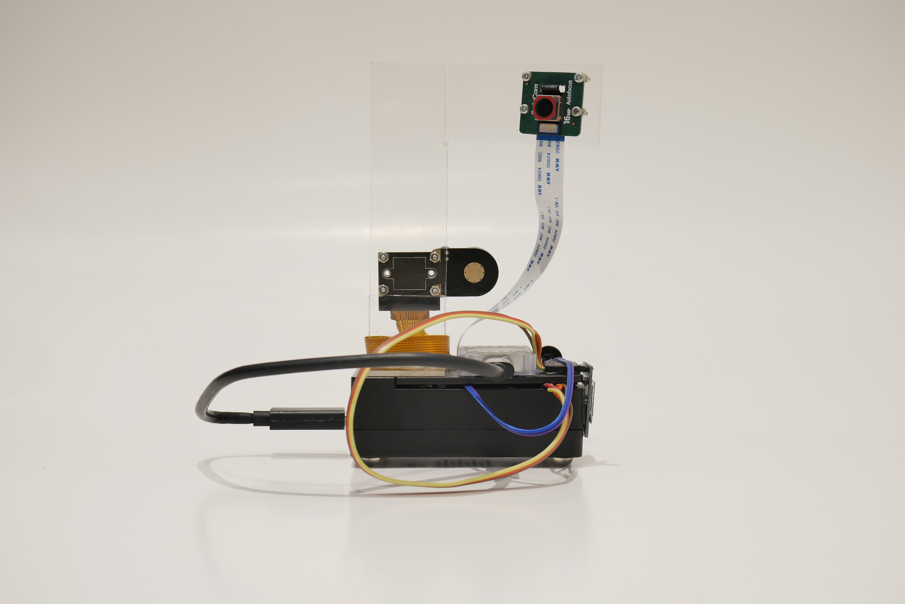
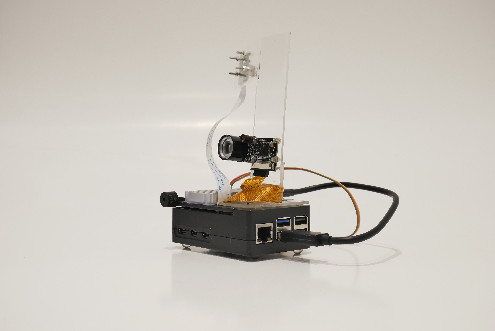
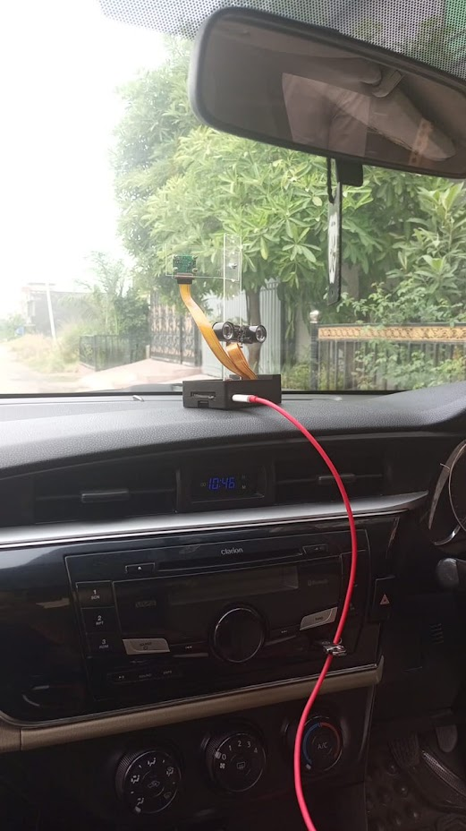
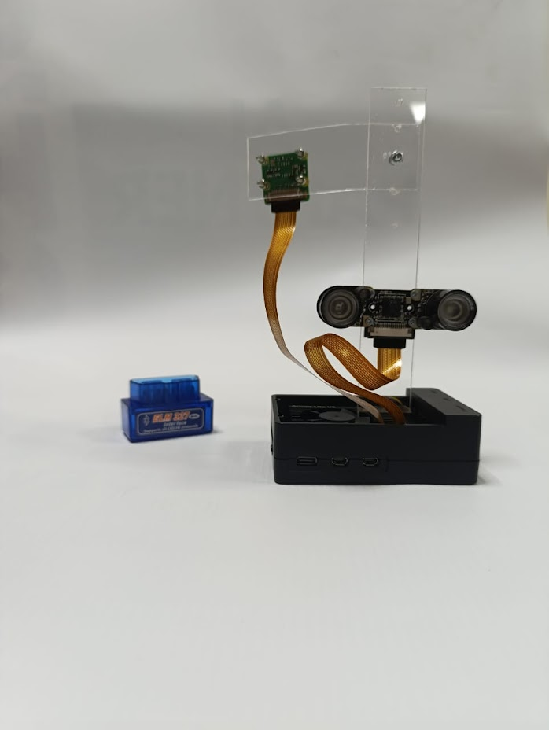

FYP-063-D-EDA | National University of Computer and Emerging Sciences
Making Roads Safer with AI-Powered Driver Assistance
The Enhanced Driver Assist (EDA) system is an AI device that improves road safety by combining various advanced driver assistance features. Our system addresses key challenges such as driver fatigue, distraction, lane discipline, and risky driving behaviors by integrating AI, IoT, and edge-computing technologies.
Fatigue and distraction-related road accidents account for a significant percentage of road traffic collisions worldwide. On motorways, fatigue-related RTCs are responsible for 54% of fatal accidents, while on national highways, they cause 41% of serious injuries. In Pakistan, drowsy driving was a contributing factor in 33% of accidents on the M2 motorway.
EDA monitors driver attention, detects lane departures, and analyzes driving patterns to provide timely alerts and interventions, thereby reducing the risk of accidents. It incorporates hardware like Raspberry Pi and Coral TPU for processing, and OBD-II sensors for vehicle data collection.

21I-2668
Responsibilities: Driver Attention Assist, Lane Departure Warning, Driving Pattern Monitoring

21I-2669
Responsibilities: Hardware Implementation, Voice Assistant, OBD-II Integration
Project Supervisor
Project Co-Supervisor
This project was developed at the KDD Lab, National University of Computer and Emerging Sciences (FAST-NUCES), Islamabad. The KDD Lab is a research facility focused on data science, machine learning, and artificial intelligence applications.
The lab provides resources and mentorship for innovative projects like EDA, supporting students in developing cutting-edge solutions to real-world problems.
Monitors the driver's facial expressions and movements to detect signs of fatigue, drowsiness, or distraction. The system provides alerts when inattention is detected, helping to prevent accidents caused by driver fatigue.
Ensures that the vehicle remains within lane boundaries. It uses road-facing cameras to track the vehicle's position in the lane and warns the driver if the vehicle deviates from its path.
Tracks driver behavior using OBD-II sensor data to monitor risky driving practices like harsh braking, speeding, and rapid acceleration. The system provides feedback to promote safer driving habits.
Enables hands-free interaction with the system. The voice assistant can control various system functions and respond to queries, helping the driver stay focused on the road.
Focuses on the integration of hardware components such as dashcams, Raspberry Pi, Coral TPU, and OBD-II sensors. It ensures the synchronization of hardware and software for optimal performance.
Over the past two months, we've had the opportunity to represent our Final Year Project — EDA (Enhanced Driver Assist) — at some of Pakistan's leading tech competitions. Our AI-powered driver assistance system has been recognized for its real-world applicability and innovation in improving highway safety through advanced driver assistance features.
These competitions have provided valuable validation and feedback, helping us refine our solution and demonstrate its potential impact on road safety.
Explore our EDA device from every angle with these 360° view photographs:






Watch our system in action with these demonstration videos of each module:
Real-time detection of driver drowsiness and distraction
Real-time lane tracking and alert system
Analysis of driving behavior using OBD-II data
Hands-free interaction with the EDA system
The entire EDA system working together in a real driving scenario
Data Collection and Pre-processing, Hardware setup
Driver Attention Monitoring and Driving Pattern Analysis, Integration, and Testing
Lane Detection and Departure Warning, Voice Assistant, Integration, and Testing
Optimization, Deployment, Combined Testing
The Enhanced Driver Assist (EDA) system addresses critical road safety challenges with an integrated approach to driver assistance. Our project aims to make a significant impact in several areas:
Our project demonstrates how combining AI, edge computing, and IoT technologies can create practical solutions for real-world safety challenges, particularly in developing countries like Pakistan where such systems are urgently needed.
Download Project Report